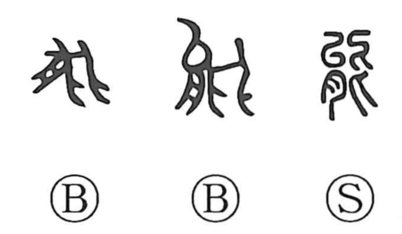

能

Kun: yoku, atau | On: nou
ability ・ to be able ・ function ・ power ・ skill ・ efficacy
Explanation
Originally a pictograph of a water-dwelling creature, the character’s early forms depict a body with splayed legs; while the Shuo Wen associates it with the bear and notes deer-like legs, the bronze graphs look more like a hermit crab. In Western Zhou bronze inscriptions—such as the Ye Gui food vessel—the character appears in phrases like 多公能福 (“Duke Duo ably bestowed blessing”), already used in the sense of can, be able, be skillful. From this core idea of capability it naturally broadened to mean the working power or efficacy of a thing—its function and capacity to accomplish results—reflected in compounds like 能力 (ability), 効能／功能 (efficacy, function), and 知能 (intelligence).